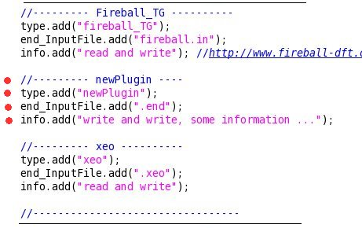
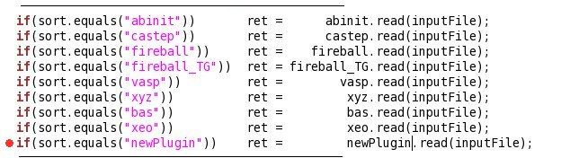
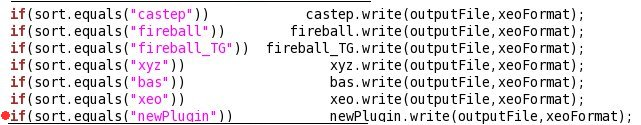
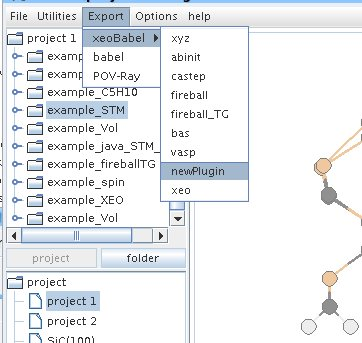

xeoBabel
Converts chemical structures from one file format to another Usage
By Daniel González Trabada
Quickly Start
$java -jar xeoBabel.jar
xeoBabel [-i] [-o]
Try -H option for more information.
$cat example.xyz
12
C 0.726982 -1.259173 -0.000033
C 1.455408 0.001138 0.000056
C 0.727939 1.262474 0.000099
C -0.727894 1.262675 0.000035
C -1.456269 0.002259 -0.000065
C -0.728756 -1.258679 -0.000097
H -1.295477 -2.239628 -0.000172
H 1.293508 -2.240247 -0.000057
H 2.588309 0.000643 0.000075
H 1.292639 2.245171 0.000174
H -1.293638 2.244189 0.000059
H -2.589154 0.002142 -0.000030
$java -jar xeoBabel.jar -i xyz example.xyz -o bas example.bas
$cat example.bas
12
6 0.726982 -1.259173 -0.000033
6 1.455408 0.001138 0.000056
6 0.727939 1.262474 0.000099
6 -0.727894 1.262675 0.000035
6 -1.456269 0.002259 -0.000065
6 -0.728756 -1.258679 -0.000097
1 -1.295477 -2.239628 -0.000172
1 1.293508 -2.240247 -0.000057
1 2.588309 0.000643 0.000075
1 1.292639 2.245171 0.000174
1 -1.293638 2.244189 0.000059
1 -2.589154 0.002142 -0.000030
Install
(./xeoBabel = java -jar xeo.jar)
you have to modify your profile (.bashrc or .profile or .cshrc, depending on the shell).
this is an example using the .bashrc
export PATH="$PATH:this directoy"
and then the program it is ready for use:
xeoBabel [-i] [-o]
Try -H option for more information.
How to do a pluging
cd xeoBabel
cp (...)/newPlugin.java src/xeoBabel/newPlugin.java
The new plugin should have:
String read(String File)
public void write(String File, String xeoFormat)
String read -> Here you read the files in the format of the program you want,
and then return a String in the xeo format
void write -> the program send you a File and a String in the xeo format,
you have to pass this format to the program format you want to write,
and write all in this file, or in this path (in the case there ar more files)
The format of xeo is:

Then you have to edit the file (src/xeoBabel/plugin.java)




Then you have to create the new xeoBabel.jar (you can do it runnig configure)
cd src/
./configure
cd ..
If you want to include the new plugin in xeo , you have to copy in the folder (lib):
cp xeoBabel.jar (path xeo)/xeo/lib/
xeo
